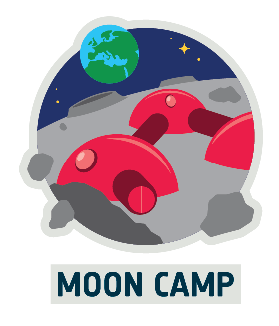

Rover espacial en Moon Camp
|
 |
Moon Camp es un proyecto educativo realizado en colaboración entre la Agencia Espacial Europea (ESA) y la Fundación Airbus, en asociación con Autodesk. Utiliza tecnologías de aprendizaje innovadoras para desafiar a los estudiantes a diseñar su propio campamento lunar con una herramienta de modelado 3D (Tinkercad o Fusion 360). Cuenta con actividades multidisciplinares que se enfocan en el aprendizaje por diseño y la experimentación científica. Estos proyectos pueden ser desde experimentos científicos, proyectos prácticos, diseño de infraestructuras espaciales, modelos de impresión 3D, mundos de realidad virtual o aumentada. Un aspecto importante de este proyecto es el empleo de medios de transporte en terrenos irregulares con capacidad exploratoria. |
Este recurso está destinado a docentes de Educación Primaria y apasionados de la robótica educativa, adaptable a proyectos de aula con alumnado de 3º a 6º curso para mejorar su alfabetización y competencias en materias CTIM (Ciencias, Tecnología, Ingeniería y Matemáticas) y el interés por el espacio.
Construir y programar un rover en el aula nos ofrece la posibilidad de diseñar una experiencia de aprendizaje transformadora que conecta a los estudiantes con la ciencia real, despierta vocaciones y fortalece competencias clave para su futuro.